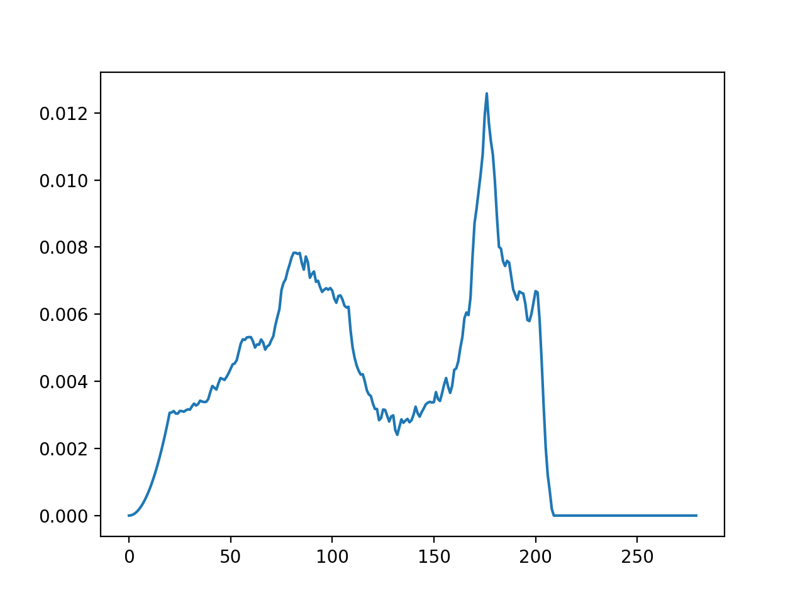
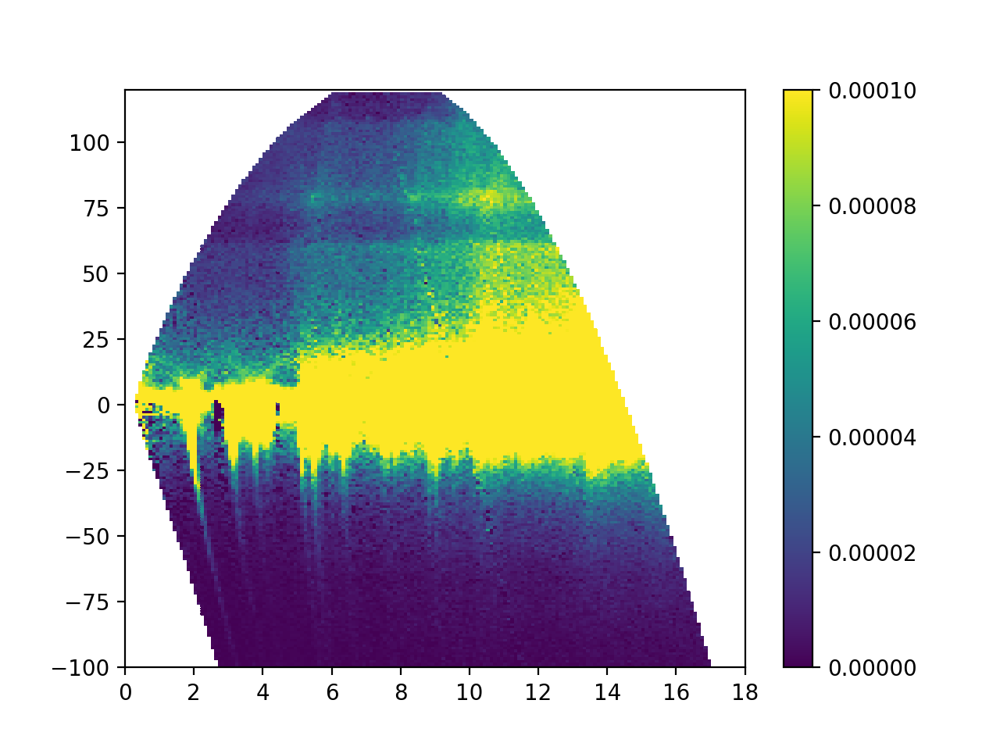

Usage¶
GetDOS at SNS analysis cluster using jupyter¶
For SNS users, GetDOS can be performed at SNS analysis cluster through the jupyter.sns.gov website.
- First log into SNS analysis cluster using thinlinc. The instructions for that can be found at https://analysis.sns.gov/
- Inside the thinlinc session of analysis.sns.gov, open a browser window and connect to https://jupyter.sns.gov, and login with your XCAMS/UCAMS account credentials
- Follow the tutorial videos below:
- For the first time users, a setup is necessary
- Run GetDOS2 (this works for SNS data only)
GetDOS using local installation¶
For any user, GetDOS can be performed with a local installation of multiphonon. Examples and instructions can be found here
General principle of operation¶
The main functionality of this package is to convert S(Q,E) spectrum

to a phonon DOS spectrum

The best way to learn how to perform such a conversion is to follow one of the notebooks or scripts in examples
The processing is an iterative procedure, and in this plot you can see the DOS is getting better in each iteration:

Working with datasets from multiple incident energies¶
This is an advanced topic.
Direct geometry spectrometers are known for their peculiar resolution variation: the resolution is the best when the energy transfer is close to the incident energy (the neutron final energy is near zero), and then it gets worse (broader) and worse as the energy transfer gets smaller. As a result, for a material with a wide range of phonon energies, the resolution of DGS instrument at lower energies is unsatisfactory. One way to alleviate this problem is to measure the phonon spectrum using multiple incident energies.
This is best explained with an example. For a system with phonon energies up to 250meV, we could measure the spectrum at two incident energies at ARCS: 300meV, and 130meV.
Here is a plot of the density of states obtained from the \(E_i=300\) meV dataset:
{kind=link}
This data covers the full phonon DOS spectrum, but the resolution at lower energies are not optimal.
Another dataset was meassured at \(E_i=130\) meV. This is the measured S(Q,E):
{kind=link}
The DOS measured in this dataset cannot exceeds 130meV, but is of better energy resolution:

The two DOSes should be “stiched” together to obtain one DOS curve. This is done by updating the low \(E\) portion of the DOS from the higher \(E_i\) measurement with the partial DOS obtained from the lower \(E_i\) measurement.
Two algorithms are available to calculate the scale factor between the two DOSes. One algorithm updates the lower \(E\) portion of the DOS by keeping the area of the updated portion intact (area rule), the other algorithm updates the lower \(E\) portion of the DOS by keeping the DOS value at the stiching point the same as the original DOS (continuity rule). Ideally these two algorithms should give the same scaling factors, but they always disagree somewhat. A good rule of thumb is to choose the stitching point (Ecutoff) at a relatively flat portion of the DOS curve.
When the two algorithms disagree in calculating the scaling factor, you may see a warning message like this:
UserWarning: Scaling factor to combine DOSes calculated is not stable: 1.19869218495 (using continuous criteria) vs 1.02762712281 (using area criteria)
Sometimes the disagreement is acceptable, other times you may want to experiment with different stitching points to get better results.
For this particular example, the “stitched” DOS would look like this:

It is obvious that the low \(E\) portion of the DOS curve is better resolved now.
The procedure here is documented in the graphite example script.